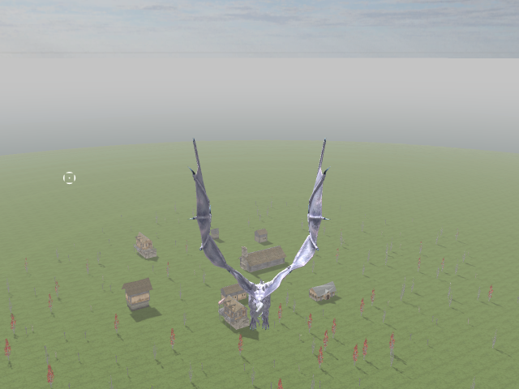
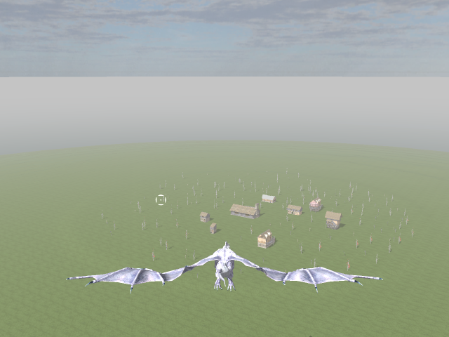

Project: Simurgh is the codename of my multiplayer flight game. It will contain flying mythological creatures but altough I'm using a dragon model currently, main theme of the game is not decided yet. Because of this I still don't have a proper name too
On the technical side, I'm using the C4 Engine. I started with my own engine as it is the programming field I'm most experienced with but I needed to speed-up a little so I decided to license an engine. C4 was the best choice for me because it has most of the features I needed(especially source code access and Linux support).
Some of my inspirations on gameplay are Freelancer(for controls), Dogfighter(for main multiplayer mechanics) and Dragon Strike(very similar to my vision of the game).
I'm thinking of finishing the prototype at the end of summer. I don't have an artist or any artistic skills so it will probably look very rough
Here's some veeery early screenshots:

